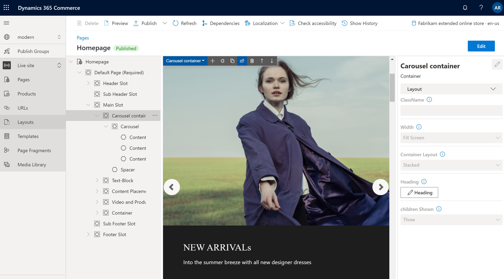

Containermodul
Important
Dynamics 365 Retail ist jetzt Dynamics 365 Commerce und bietet umfassende Handelsfunktionen für alle Kanäle – von E-Commerce über Shops bis hin zu Callcentern. Weitere Informationen zu diesen Änderungen finden Sie unter Microsoft Dynamics 365 Commerce.
Dieses Thema enthält Containermodule und es wird beschrieben, wie diese Siteseiten in Microsoft Dynamics 365 Commerce hinzugefügt werden.
Übersicht
Ein Containermodul ist ein Modul, das andere Module hostet. Der Hauptzweck eines Containermoduls ist es, das Layout der Module über die Eigenschaften, die für es festgelegt sind und die es enthält, zu bestimmen. Diese Module können nebeneinander in einem Zwei-, Drei-, Vier- oder Sechsspalten-Layout angezeigt werden. Sie können auch auf die Breite des Containers beschränkt werden, oder sie können den Bildschirm ausfüllen. Eine Überschrift kann zu jedem Containermodul hinzugefügt werden.
Es werden drei Containermodule unterstützt: Container, Container mit 2 Slots und Container mit 3 Slots. Es können Module eines beliebigen Typs innerhalb dieser Container festgelegt werden.
Note
Es wird empfohlen, dass Sie immer die Module innerhalb eines Containermoduls festlegen, sodass sie auf die Breite des Containers beschränkt werden können.
Beispiele für Containermodulen in E-Commerce
- Ein Siteautor will ein Dreispaltenlayout, bei dem drei Module nebeneinander angezeigt werden. Daher nutzt der Siteautor ein Containermodul des Containers vom Typ mit 3 Slots.
- Ein Siteautor will ein Sechspaltenlayout, bei dem sechs Module nebeneinander angezeigt werden. Daher verwendet der Siteautor einen Container des Typs mit sechs Spalten darin.
- Ein Standortautor möchte ein Modul für eine Seite setzen, möchte aber sie nicht den Bildschirm ausfüllen. Daher wird der Siteautor das Modul einem Containermodul hinzufügen und legt die Eigenschaft Breite des Containers auf Eingepasster Container fest.
Das folgende Bild zeigt ein Beispiel für ein Containermodul, das ein Karussellmodul im Commerce Site Builder enthält. In diesem Beispiel ist die Breite Eigenschaft des Containermoduls auf Bildschirm ausfüllen festgelegt.

Containermoduleigenschaften
| Eigenschaftenname | Werte | Beschreibung |
|---|---|---|
| Überschrift | Überschriftentext und Überschriftsmarkierung (H1, H2, H3, H4, H5 oder H6) | Eine optionale Überschrift kann für den Container bereitgestellt werden. Standardmäßig wird die H2 Überschriftsmarkierung für die Überschrift verwendet. Die Markierung kann jedoch geändert werden, um Zugangsbedingungen zu erfüllen. |
| Breite | Eingepasster Container oder Bildschirm ausfüllen | Wenn der Wert auf Eingepasster Container (der Standardwert) festgelegt ist, werden die Module im Containers auf die Breite des Containers beschränkt. Wenn der Wert auf Bildschirm ausfüllen gesetzt wird, werden die Module nicht auf die Containerbreite eingeschränkt und können den Bildschirm ausfüllen. |
| Spaltenanzahl | 1, 2, 3, 4, 6, oder 12 | Diese Eigenschaft definiert die Anzahl der Spalten in Container. Ein Container kann bis 12 Spalten enthalten. |
Container mit 2 Slots
Der Container vom Typ mit 2 Slots wird für ein Zwei-Spaltenlayout optimiert. Der Containertyp hat zwei Slots, um eine parallele Ansicht der Module zuzulassen, die sich darin befinden.
Zusätzliche Eigenschaften können verwendet werden, um das Layout für verschiedene Ansichtsports zu optimieren (mobile Geräte, Tablets, Computer, etc.) Für jeden Ansichtsport kann die Breite jeder Spalte definiert werden. Die folgende Spaltenbreiteneinstellungen sind verfügbar:
- 75%/25% – Das erste Modul verfügt über eine Spaltenbreite von 75 Prozent, und das zweites Modul verfügt eine Spaltenbreite von 25 Prozent. Eine Option 25%/75% steht auch zur Verfügung.
- 50%/50% – Beide Module haben gleiche Spaltenbreite.
- 67%/33% – Das erste Modul verfügt über eine Spaltenbreite von 67 Prozent, und das zweites Modul verfügt eine Spaltenbreite von 33 Prozent. Eine Option 33%/67% steht auch zur Verfügung.
- 100% – Beide Module haben eine volle Spaltenbreite. Daher werden die Module vertikal gestapelte in eine einzelne Spalte. Obwohl dieses einspaltige Layout dem Zweck des Containers mit 2 Slots widerspricht, kann es für einige Ansichtsports von Vorteil sein (beispielsweise, sehr kleine Viewports wie mobile Geräte).
Container mit 2 Sloteigenschaften
| Eigenschaftenname | Werte | Beschreibung |
|---|---|---|
| Überschrift | Überschriftentext und Überschriftsmarkierung | Eine optionale Überschrift kann für den Container bereitgestellt werden. |
| Sehr kleine Ansichtsportkonfiguration | 25%/75%, 75%/25%, 50%/50%, 67%/33%, 33%/67%, oder 100% | Diese Eigenschaft definiert das Layout für sehr kleine Ansichtsports. |
| Kleine Ansichtsportkonfiguration | 25%/75%, 75%/25%, 50%/50%, 67%/33%, 33%/67%, oder 100% | Diese Eigenschaft definiert das Layout für kleine Ansichtsports wie mobile Geräte. |
| Mittlere Ansichtsportkonfiguration | 25%/75%, 75%/25%, 50%/50%, 67%/33%, 33%/67%, oder 100% | Diese Eigenschaft definiert das Layout für mittlere Ansichtsports wie Tablets. |
| Große Ansichtsportkonfiguration | 25%/75%, 75%/25%, 50%/50%, 67%/33%, 33%/67%, oder 100% | Diese Eigenschaft definiert das Layout für große Ansichtsports wie Computer. |
Container mit 3 Slots
Der Container vom Modultyp mit 3 Slots wird für ein Drei-Spaltenlayout optimiert.
Zusätzliche Eigenschaften können verwendet werden, um das Layout für verschiedene Ansichtsports zu optimieren. Für jeden Ansichtsport kann die Breite jeder Spalte definiert werden. Die folgende Spaltenbreiteneinstellungen sind verfügbar:
- 33%/33%/33% – Alle drei Module haben gleiche Spaltenbreite.
- 50%/25%/25% – Das erste Modul verfügt über eine Spaltenbreite von 50 Prozent, und jedes der beiden verbleibenden Module verfügt über eine Spaltenbreite von 25 Prozent. 25%/50%/25% und 25%/25%/50% Optionen stehen auch zur Verfügung.
- 16%/16%/67% – Jede der ersten zwei Modul verfügt über eine Spaltenbreite von 16 Prozent, und das dritte Modul verfügt über eine Spaltenbreite von 67 Prozent. 16%/67%/16% und 67%/16%/16% Optionen stehen auch zur Verfügung.
Container mit 3 Sloteigenschaften
| Eigenschaftenname | Werte | Beschreibung |
|---|---|---|
| Überschrift | Überschriftentext und Überschriftsmarkierung | Eine optionale Überschrift kann dem Container hinzugefügt werden. |
| Sehr kleine Ansichtsportkonfiguration | 33%/33%/33%, 50%/25%/25%, 25%/50%/25%, 25%/25%/50%, 16%/16%/67%, 16%/67%/16% oder 67%/16%/16% | Diese Eigenschaft definiert das Layout für sehr kleine Ansichtsports. |
| Kleine Ansichtsportkonfiguration | 33%/33%/33%, 50%/25%/25%, 25%/50%/25%, 25%/25%/50%, 16%/16%/67%, 16%/67%/16% oder 67%/16%/16% | Diese Eigenschaft definiert das Layout für kleine Ansichtsports wie mobile Geräte. |
| Mittlere Ansichtsportkonfiguration | 33%/33%/33%, 50%/25%/25%, 25%/50%/25%, 25%/25%/50%, 16%/16%/67%, 16%/67%/16% oder 67%/16%/16% | Diese Eigenschaft definiert das Layout für mittlere Ansichtsports wie Tablets. |
| Große Ansichtsportkonfiguration | 33%/33%/33%, 50%/25%/25%, 25%/50%/25%, 25%/25%/50%, 16%/16%/67%, 16%/67%/16% oder 67%/16%/16% | Diese Eigenschaft definiert das Layout für große Ansichtsports wie Computer. |
Ein Containermodul einer neuen Seite hinzufügen
Um ein Containerspielmodul einer neuen Seite hinzuzufügen und die erforderlichen Eigenschaften festzulegen, führen Sie die folgenden Schritte aus.
- Wechseln Sie zu Vorlagen und wählen Sie Neu aus, um eine neue Vorlage zu erstellen.
- Im Dialogfeld Neue Vorlage unter Vorlagenname geben Sie Containervorlage ein und wählen OK.
- Wählen Sie im Slot Körper die Ellipsen-Schaltfläche (...) und wählen Sie Modul hinzufügen.
- Wählen Sie im Dialogfeld Modul hinzufügen das Modul Standardseite und dann OK aus.
- Wählen Sie Speichern, wählen Sie Bearbeiten beenden, um die Vorlage einzuchecken, und wählen Sie dann Veröffentlichen, um es zu veröffentlichen.
- Wechseln Sie zu Seiten, und wählen Sie dann Neu aus, um eine neue Seite zu erstellen.
- In dem Dialogfeld Wählen Sie eine Vorlage wählen Sie die von Ihnen erstellte Video-Player-Vorlage aus. Unter Seitenname geben Sie Container-Seite ein und wählen dann OK aus.
- Auf der neuen Seite wählen Sie Haupt-Slot und wählen dann die Ellipsen (...) und wählen Modul hinzufügen.
- Wählen Sie im Dialogfeld Modul hinzufügen wählen Sie das Modul Container und dann OK aus.
- Im Eigenschaftenbereich für das Containermodul legen Sie die Eigenschaft Anzahl der Spalten auf 1 und die Eigenschaft Breite auf Container füllen fest.
- Wählen Sie im Slot Container die Ellipsen-Schaltfläche (...) und wählen Sie Modul hinzufügen.
- Wählen Sie im Dialogfeld Modul hinzufügen das Modul Inhaltblock und dann OK aus.
- Konfigurieren Sie im Eigenschaftenbereich für das Inhaltsblockmodul die Überschrift, das Bild und das Layout.
- Wählen Speichern und dann Vorschau aus, um eine Vorschau der Seite anzuzeigen. Sie sollten ein Funktionsmodul sehen, das in die Breite des Containermoduls passt.
- Im Eigenschaftenbereich für das Containermodul ändern Sie den Wert der Eigenschaft Anzahl der Spalten auf 3.
- Fügen Sie dem Containermodul zwei weitere Inhaltsblockmodule hinzu und konfigurieren Sie sie.
- Wählen Speichern und dann Vorschau aus, um eine Vorschau der Seite anzuzeigen. Sie können jetzt drei Inhaltsblockmodule sehen, die nebeneinander angezeigt werden.
- Nachdem Sie das gewünschte Layout erreicht haben, wählen Sie Beenden Sie die Bearbeitung, um die Seite einzuchecken, und wählen Sie dann Veröffentlichen zum Veröffentlichen.